People
Aaron Peikert
I love exploring science from first principles, tracing its impact all the way to the everyday decisions researchers make. I dabble in statistics, computer science, and philosophy of science.
Alejandra Manco
NA
Alexander Nicolai Wendt
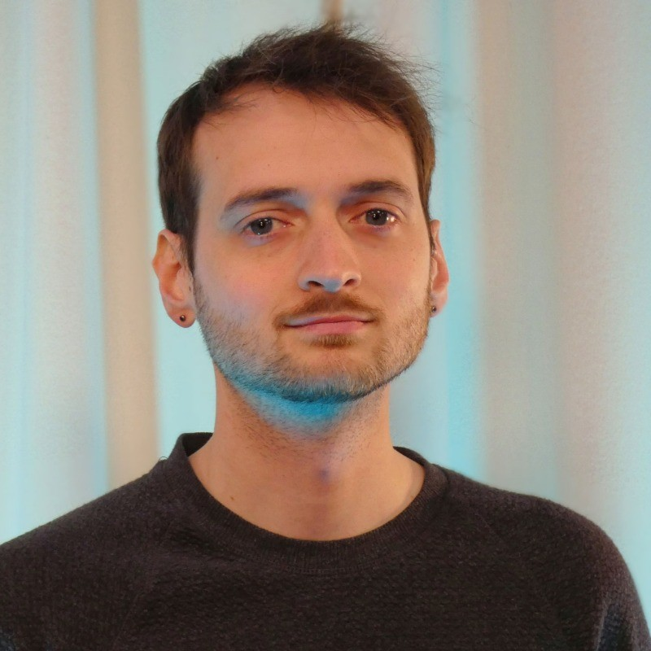
Alexander Nicolai Wendt is interested in philosophical and theoretical psychology as well as their history, especially phenomenological psychology. He is in charge of organising the Arbeitsgemeinschaft Philosophie & Psychologie, a German working collective for the interdisciplinary exchange between philosophy and psychology: www.phi-psy.de
Alexandra Sarafoglou
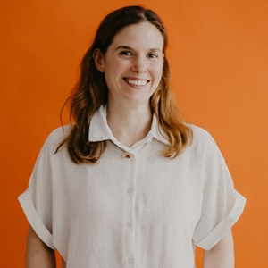
I dabble in advanced Bayesian modelling, analysis blinding and the many-analysts approach. I joined the Theory Methods Society since I am particularly interested in researching how the many-analysts approach can help researchers improve theory development.
Andrea van Langerak
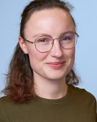
I’m a PhD candidate at Leiden University. My work focuses primarily on self-correction within psychological research.
Andreas Brandmaier
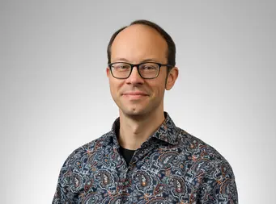
Professor for Research Methodology (Psychology); Computer & Data Scientist; Tool Developer; likes research methods, multivariate models, latent variables, individual differences, reproducibility, and R
Andreas Glöckner
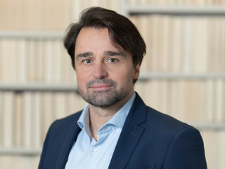
I am a decision researcher and social psychologist at the University of Cologne. I have a long standing interest in cognitive modelling, open science, and theory development. Together with Susann Fiedler and Fiona tho Pesch, I initiated the Theory Specification Challenge, a many theorists project to analyze and specify classic theories of social psychology.
Anna M.H. Abrams
I am a social psychologist in the field of human-robot interaction. I research social categorization and group dynamics in social settings that include artificial agents. My main research interest lies in understanding how far socio-psychological theory can or cannot be extended to explain phenomena with robots and AI.
Anna-Lena Schubert
My work focuses on unraveling the fundamental neurocognitive processes – like mental speed and attentional control – that shape our cognitive abilities. By bridging the gaps between cognitive psychology, cognitive neuroscience, and mathematical psychology, I aim to create a richer picture of how these building blocks of cognition interact to drive individual differences in reasoning ability. Ultimately, this cross-disciplinary approach helps link precise, theory-based measures of cognitive processes to neural correlates of cognitive processes to explain variations in our capacity for higher-order cognition.
Anouk Bouma
As a PhD student at the Meta-Research Center at Tilburg University I am interested in all things Meta-Science. My project specifically focusses on the trustworthiness of simulation studies within the social/behavioral sciences. I am also active as a board member of the Platform for Young Meta-Scientists (PYMS).
Ben Kretzler
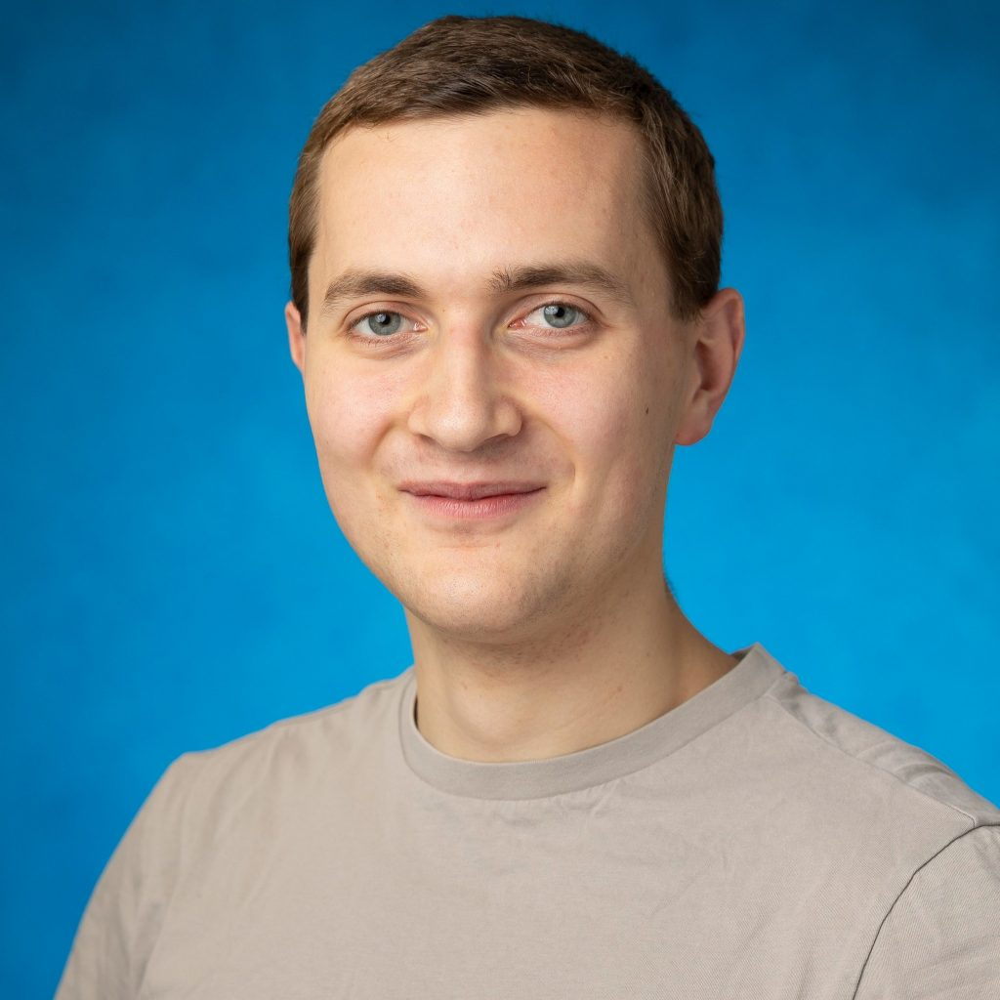
Hi, I am Ben, a PhD student at the meta-research center at Tilburg University.
Caspar J. Van Lissa
My Vidi-funded research line uses machine learning for rigorous exploration, and uses the resulting data-driven insights to complement blind spots in theory.
Claudia Neuendorf
I am an educational pschologist interested in the social integration of students in their classroom. I love learning and adopting new methods and thinking about science. As a former research data manager, I have been drawn into Open Science by advocating Open Data and from there step by step developed my passion for promoting Open Science and research integrity.
Daniel Lakens
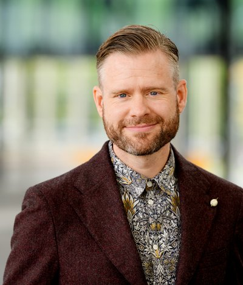
Full Professor in the Human-Technology interaction group at Eindhoven University of Technology (TU/e). Daniel’s expertise includes meta-science, research methods and applied statistics.
Denny Borsboom
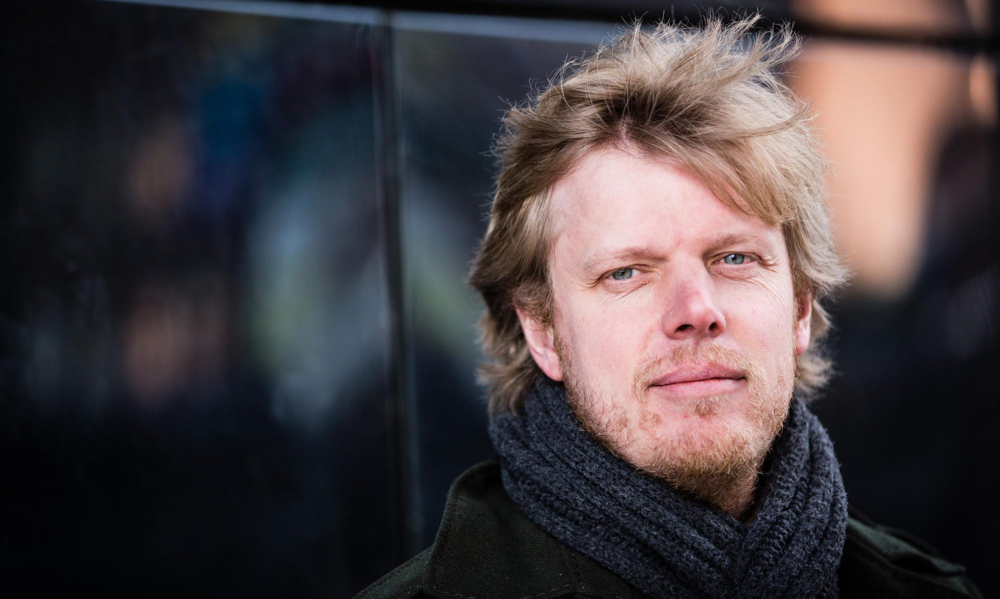
I have a long standing interest in theory construction and have developed various methodological tools to assist researchers in building theories.
Eiko Fried
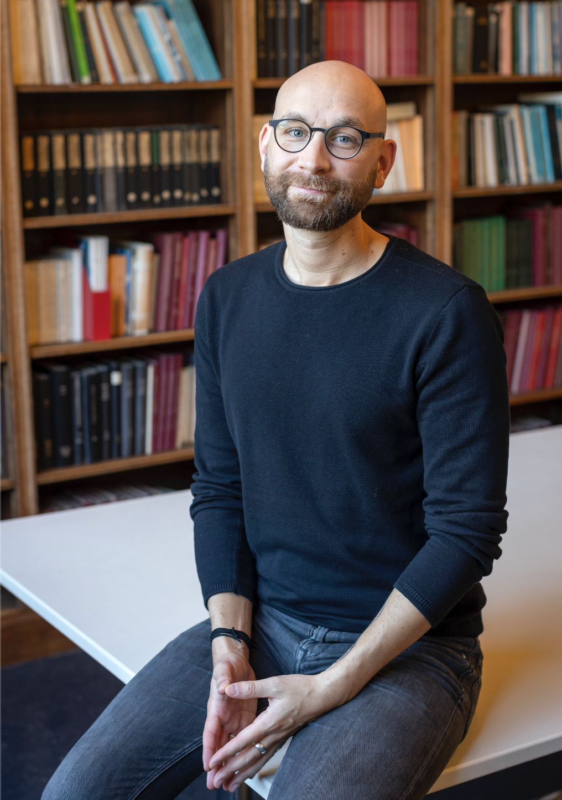
My interests are how to best describe, measure, predict, and understand mental health problems. To do so, I conceptualize them as emergent properties that arise from complex, dynamical, biopsychosocial, transdiagnostic systems, rather than as clear-cut categories with simple causes. My team and I work at the intersection of mental health science and data science, and follow open scholarship principles.
Fabian Hutmacher
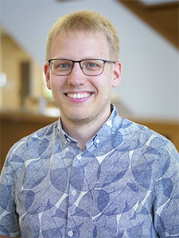
I am a lecturer at the University of Würzburg, Germany. My empirical research is concerned with information processing and memory (in the digital age). In addition, I enjoy thinking about the conceptual and methodological foundations of our discipline.
Felicitas Flade
NA
Felix Schönbrodt
Prof. at Department of Psychology, Ludwig-Maximilians-Universität München, Germany. Managing director of the LMU Open Science Center and board member of the META-REP priority program (“A meta-scientific research program to analyse and optimise replicability in the behavioral, social, and cognitive Sciences”). Interested in Open Science, Metascience, implicit motives, machine learning, responsible research assessment (CoARA), solarpunk, piano, and cooking.
Fiona tho Pesch
I am a social psychologist interested in meta-science and theory development. I am currently leading a Many Theorists project in which, together with a large group of (social) psychologists from all over the world, we are specifying classic social psychological theories. Other than that, I am also interested in the psychology of poverty and social inequality.
Frances Grace Hart
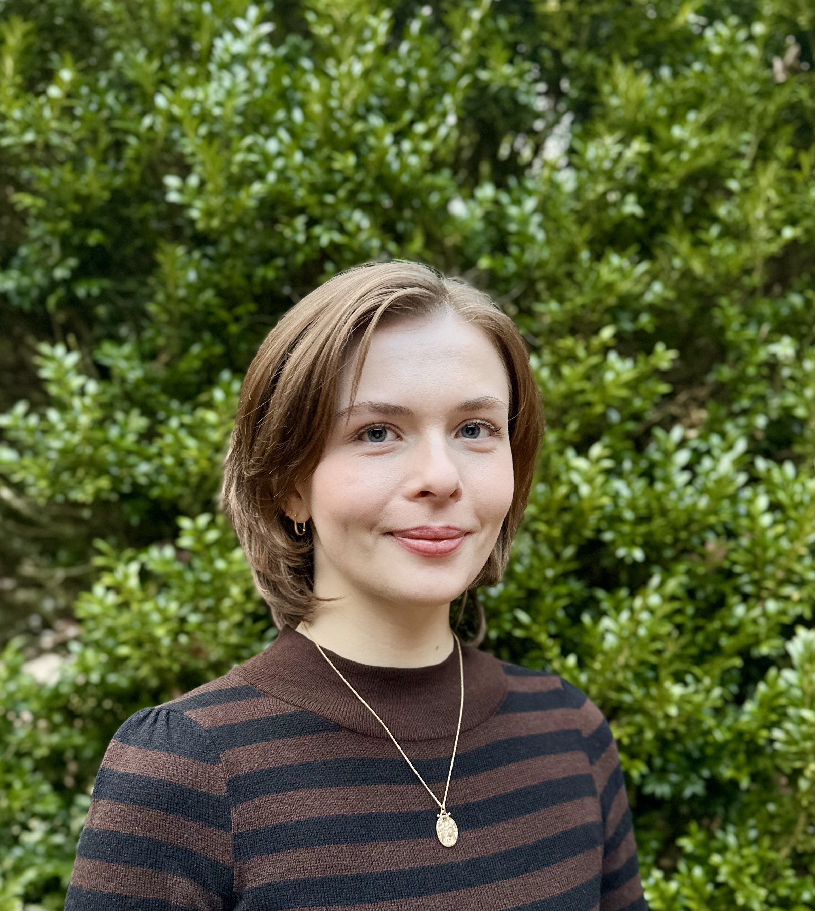
Grace is a Postgraduate Associate in Yale University’s Psychology Department and lab manager of Dr. Shirley Wang’s Computational Clinical Science Lab.
She is broadly interested in existential psychology and metascience, including suicide; death beliefs and attitudes; measurement; and theory formalization.
Gidon T. Frischkorn
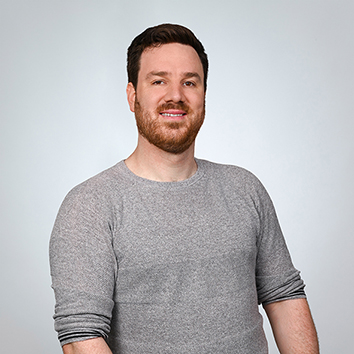
I currently work as an SNF Ambizione Fellow associated with the Cognitive Psychology Lab at the Department of Psychology of the University of Zurich. I am a psychometrician focussing on 1) the theory guided measurement of cognitive processes, such as working memory, processing speed, and attention, as well as 2) evaluating experimental manipulations that might affect these processes.
Ihnwhi Heo
As a quantitative methodologist, I integrate quantitative, computational, and machine learning approaches to develop, evaluate, and implement statistical methods. My research program focuses on Bayesian inference, latent variable modeling, and missing data. I incorporate an open science philosophy into my teaching and research to promote confidence and transparency.
Jens Lange
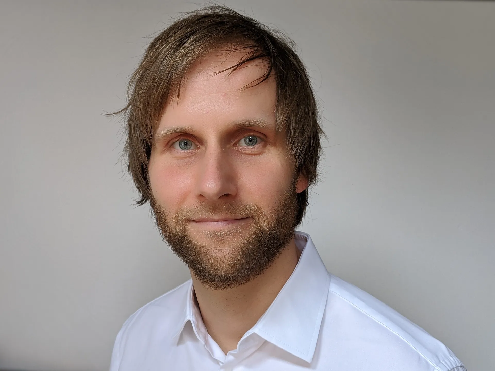
I am a social and personality psychologists who primarily investigates emotions. I conceptualize emotions as complex systems and use agent-based modeling to understand how emotions unfold within persons as well as how they lead to the emergence of social structures.
Joscha Dutli
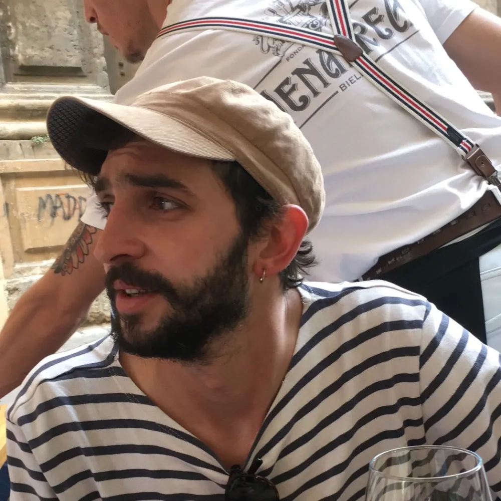
PhD student in the Cognition Lab at the University of Zurich. I am interested in computational modeling and in the process of creating and testing theories in psychology.
Karoline Huth
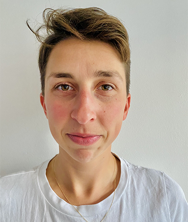
Karoline is a postdoctoral researcher at Maastricht University. Her work focuses on computational modeling and theory development for social connectedness and loneliness, using Bayesian methods, network analysis, and dynamical systems.
Kasper Hornbæk
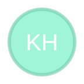
I am a professor of computer science, working in human-computer interaction (HCI). My work concerns studying and improving the development and use of theory about HCI; I am broadly interested in how other fields (notably psychology) deal with these topics.
Klaus Oberauer
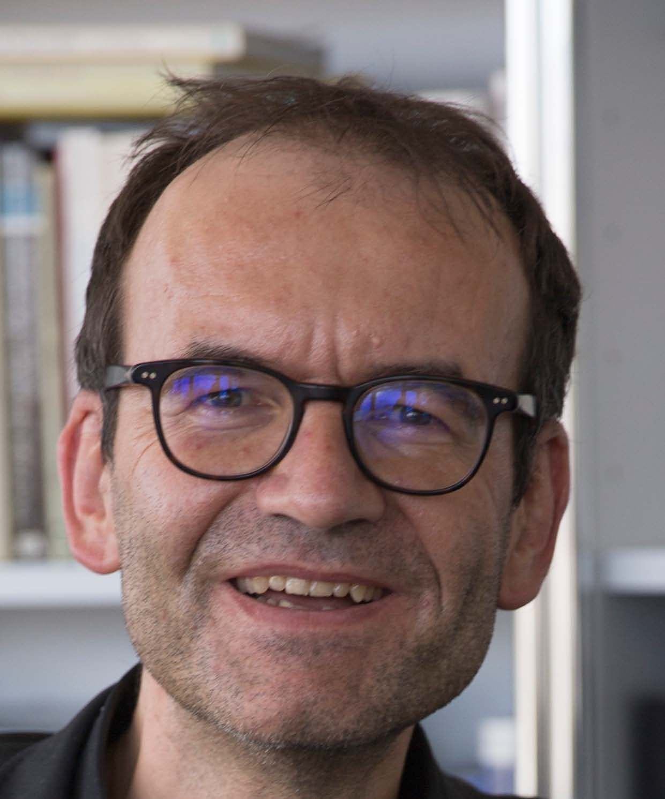
I am a cognitive psychologist interested in the capacity limits of cognition. I study primarily working memory and its relations to attention, long-term memory, reasoning, as well as individual differences in cognition. I do behavioral experiments and try to understand their results with the help of computational models.
Kyra Evers
{kind=link}
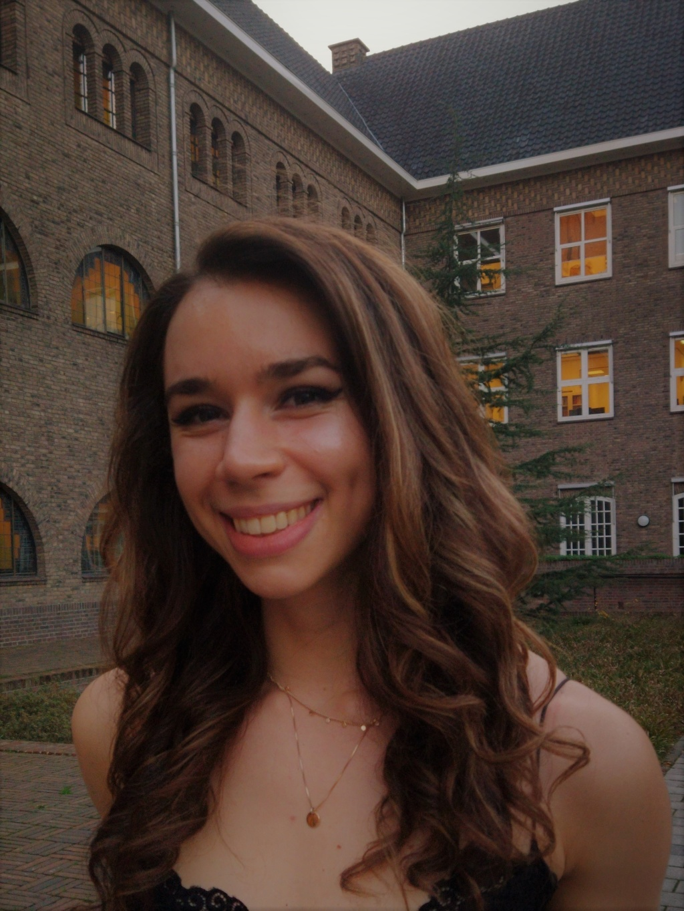
PhD student at the Psychological Methods department at the University of Amsterdam. In my research, I develop computational tools to aid theory formation in psychology. My main interest lies in applying a system dynamics perspective to psychopathology.
Kyuri Park
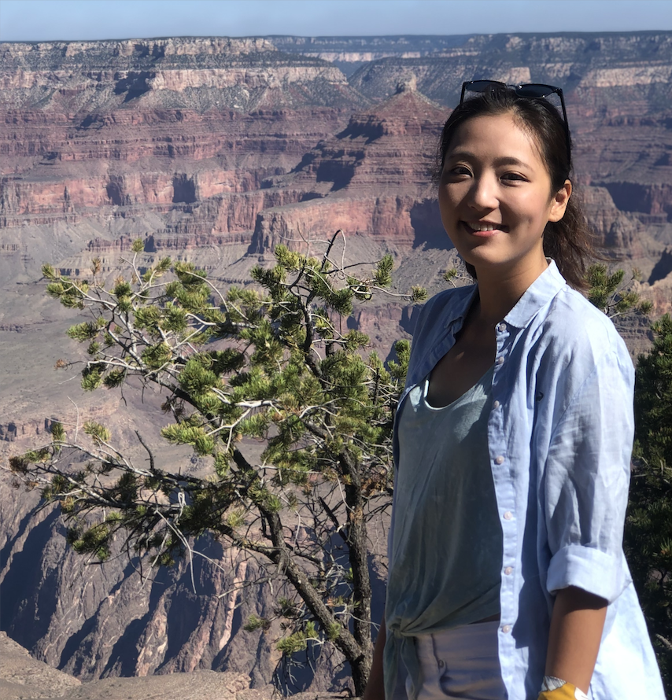
I’m a PhD candidate at the Computational Science Lab, University of Amsterdam. My research focuses on modeling complex dynamical systems in (mental) health and other human-centered domains.
Laura Bringmann
Laura Bringmann is an associate professor at the Department of Psychometrics and Statistics (University of Groningen), and heads the LaBlab (Laura Bringmann’s intensive longitudinal data lab; https://www.laurabringmannlab.com/). Her research focuses on bridging the gap between fields such as statistics, philosophy, methodology, and clinical psychology.
Leonhard Volz
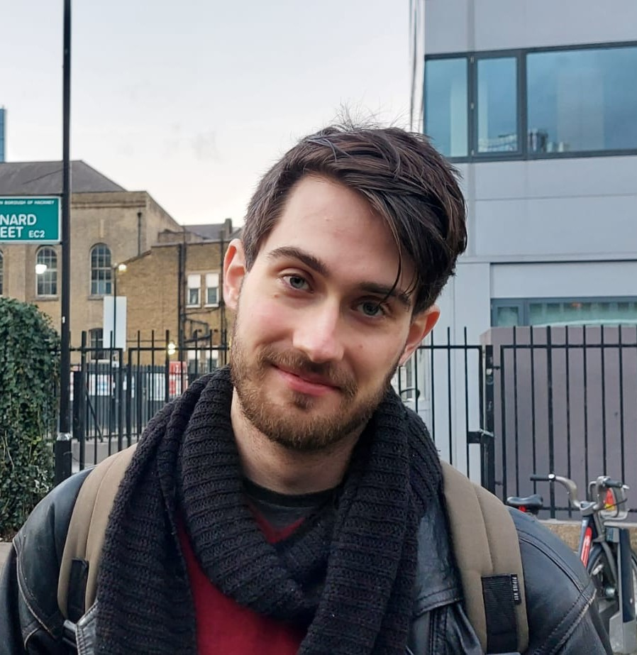
My focus is on computational methods and infrastructure for formal theories of psychological processes as part of the Department Methodology and Statistics at Tilburg University. In that context, I work on different approaches to psychological modelling, such as network analysis, cognitive modelling, and machine-learning-inspired methods for theory construction. Besides that, I am passionate about open and sound research methods in (psychological) science and has been active in various topical (student) initiatives.
Marianne Skogbrott Birkeland
Marianne Skogbrott Birkeland is a Clinical Psychologist and Research Professor at the Norwegian Centre for Violence and Traumatic Stress Studies. I would like to contribute to the theory building in the field of trauma and stress. I am particularly interested in understanding change processes and developing innovative theoretical frameworks that can advance our understanding of traumatic stress responses.
Marieke A. Helmich
Marieke is a postdoctoral researcher with the i-Care research line (Radboudumc/Tilburg University). Her research focuses on understanding changes in psychopathology from a complex dynamical systems point of view.
Markus Eronen
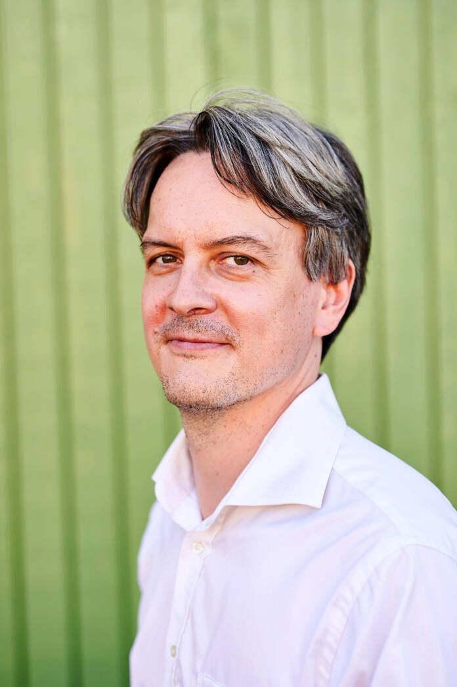
I am a philosopher of science at the University of Groningen, working on the limits and possibilities of developing psychological theories and causal explanations.
Michael S. Truong
I am a PhD student in the Quantitative Methods program of York University. I am interested in the possibility of using what generative models imply is impossible to facilitate data analysis and advance theory.
Nate Choukas
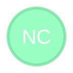
Nate is a third-year graduate student in clinical psychology under the primary mentorship of Dr. Zachary Cohen. His primary line of research focuses on developing a formal network theory of PTSD, using computational modeling and complex systems science to understand the dynamic mechanisms that maintain posttraumatic distress. He integrates network psychometrics with intensive longitudinal data (ILD) methods, such as ecological momentary assessment (EMA) and passive sensing, to examine real-world symptom dynamics, psychological processes, and individual differences in treatment response. Nate also works on developing and evaluating scalable, personalized digital mental health interventions for diverse populations. In his free time, he enjoys playing golf, making music, exercising, and spending time with family and friends.
Nathalie Claus
NA
Nick Ballou
Postdoc at the University of Oxford studying media use and mental health. Constantly confronting challenges for our field that—like Scooby Doo villains—were actually deficient theory development all along.
Noah N. N. Van Dongen
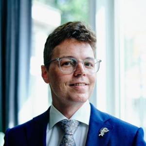
Noah Van Dongen works as a methodologist at the Amsterdam School of Law.
Patrick Kaschel
Patrick Kaschel is interested in methods for formal theory development and in using formal theories to enhance cumulative knowledge generation. He has a background in Psychology and Statistics.
Philipp Musfeld
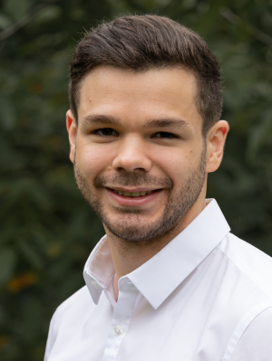
Postdoctoral researcher in the Cognition Lab at the University of Zurich. Next to my main research interest in cognitive science, I am passionate about shaping a more open, transparent, and theory-driven culture in psychological research.
Ranran Li

PostDoc @Max Planck Institute for the Study of Crime, Security and Law, Freiburg. With the belief that ‘Serious inquiry into human nature is not a luxury’, I am inspecting how personality traits and psychological situational factors jointly shape behavior (e.g., prosociality, dishonesty, delinquency, bystander intervention).
Rasoul Norouzi
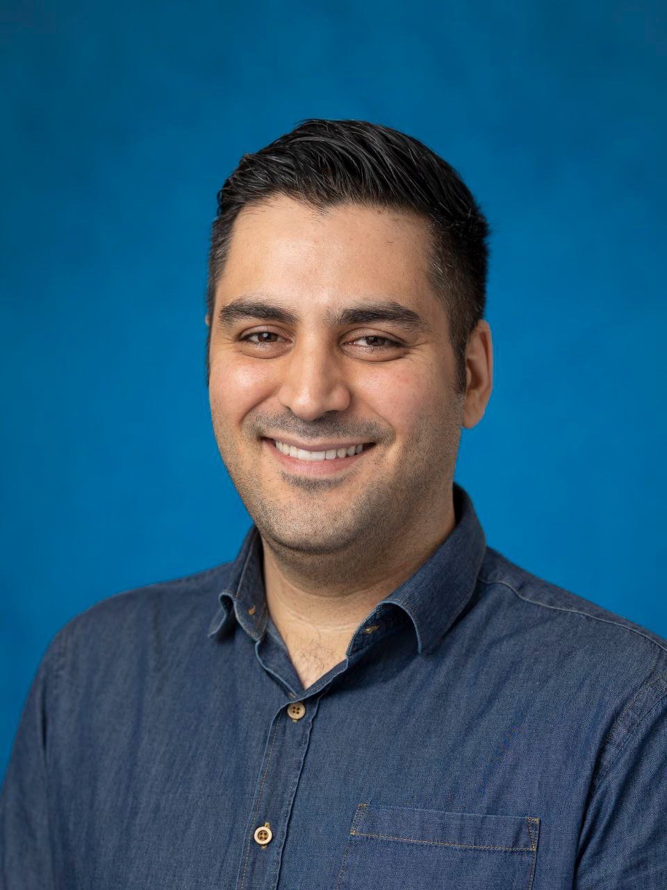
Rasoul is a PhD student in the Methodology and Statistics department at Tilburg University, working under the supervision of Caspar van Lissa. His expertise lies in advanced text mining techniques and language models for retrieving information from scholarly papers. His PhD project aims to automate the generation and analysis of Directed Acyclic Graphs (DAGs) that capture cause-effect relationships. Through these graphs, he seeks to uncover hidden patterns and latent theoretical structures, refining existing theories and aiding in the development of new ones.
Riet van Bork
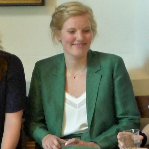
Assistant professor in psychological methods at the University of Amsterdam. My main area of research concerns how theory underlying psychological measurement relates to the statistical models that are used as measurement models in psychology.
Shirley Wang
I am an Assistant Professor in the Department of Psychology at Yale University, where I direct the Computational Clinical Science Lab (https://ccslab.yale.edu/). The goal of our research is to develop and harness methods to capture and model the immense complexity of mental health and illness (with a focus on suicide and other forms of self-harm, including nonsuicidal self-injury and eating disorders). Our work is interdisciplinary by nature. We integrate methods from across the clinical and computational sciences, including machine learning, mathematical modeling, and digital phenotyping.
Tessa Blanken
Assistant professor in clinical methodology at the Departments of Clinical Psychology and Psychological Methods at the University of Amsterdam. My research focuses on the role of sleep in well-being, where I integrate biology and behaviour through network science and computational modelling.
Ven Popov
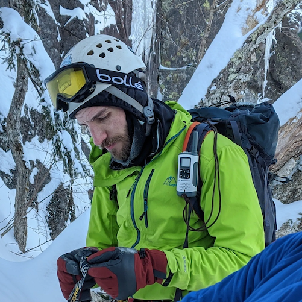
I am tenured senior scientist at the University of Zurich. I use computational models, behavioral experiments and neuroimaging data to understand cognition. I am passionate about the history and philosophy of science, and about improving the state of theorizing in psychology.
W. Fred Garvey
I am a PhD student of the Cognitive Abilities and Plasticity Lab at the University of Sheffield. I am interested in individual differences and underlying processes of cognition, especially working memory, intelligence, attention control, and long-term memory.
Ward B. Eiling
My main research interest occurs at intersection of philosophy of science and statistics and lies with issues regarding theory formation and measurement in the social sciences. My PhD projects, under the supervision of Caspar van Lissa, aim to further develop causal discovery and machine learning methods to support inductive research.
Willem Frankenhuis
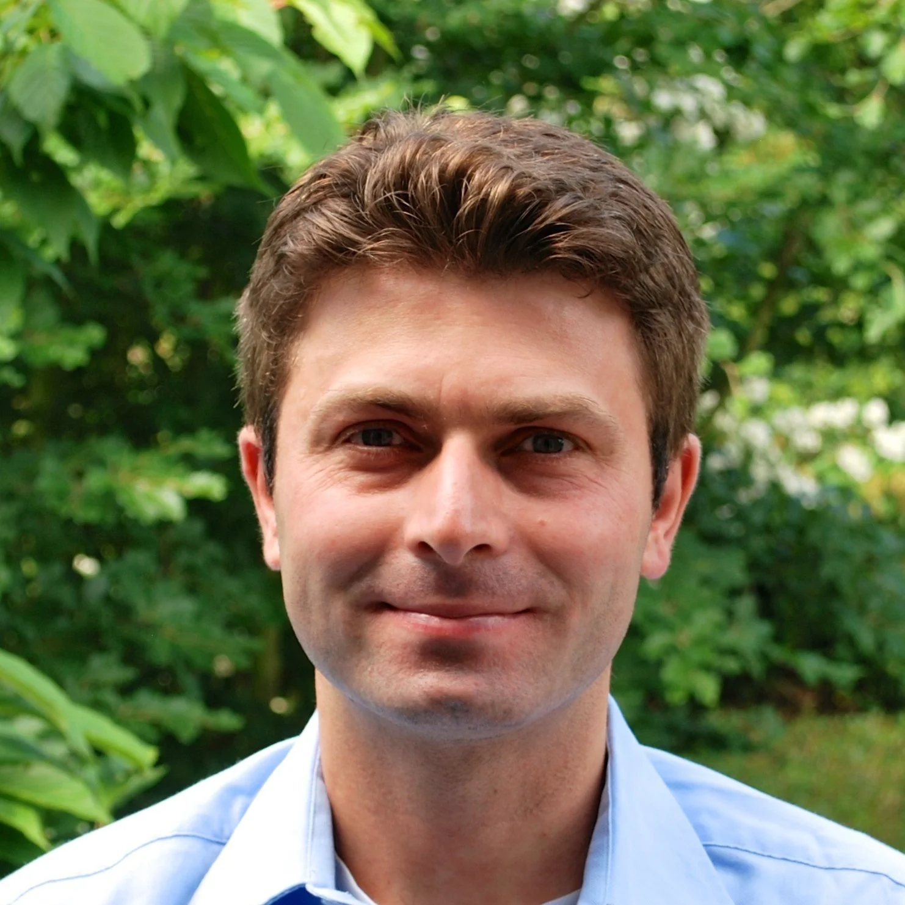
Willem Frankenhuis is Associate Professor at the Institute for Biodiversity and Ecosystem Dynamics of the University of Amsterdam. He is also Senior Researcher at the Max Planck Institute for Research on Crime, Security and Law in Germany. Before his current position, he worked at Utrecht University (2020-2023) and Radboud University (2012-2020). He studies how people develop in harsh and unpredictable conditions. His empirical work focuses on ‘hidden talents’, abilities enhanced by adversity, and ‘reasonable responses’, decisions and behavior tailored to the demands of adverse environments. In his theoretical work, he uses mathematical modeling to understand how adaptive processes operating on different timescales—evolution, development, and learning—tailor individuals to their environments.
Yuki Yamada
I am currently working as an associate professor at Kyushu University and have a background in cognitive psychology. One that loves meta science, open science, and dogs.